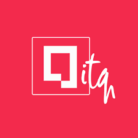

Inicio
Calendario
Tabla de Posiciones
Campeonato de Futbol del ITQ
INAUGURACION PERIODO ACADEMICO ABR-SEP 2024
SUPER INICIO ITQ 2024
Club de futbol
El talento gana partidos, pero el trabajo en equipo y la determinacion ganan campeonatos